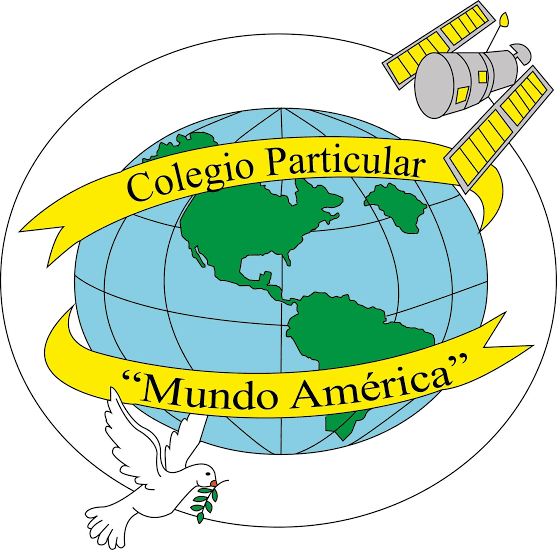
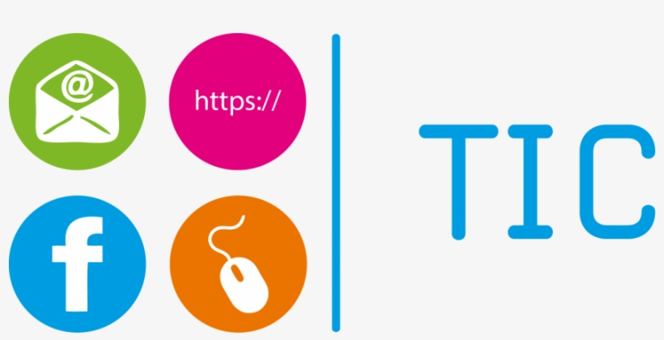
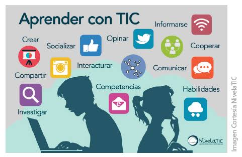

Aprendizaje
Facilitan el acceso a libros digitales, clases virtuales, tutoriales y materiales educativos que amplían nuestros conocimientos.
Accesibilidad por voz: Puedes escuchar en audio cualquier párrafo o sección presionando los botones de audio 🔊.

La tecnología nos conecta, nos enseña y nos ayuda a crear. Aprendamos a utilizarla de manera segura, respetuosa, crítica y equilibrada.

Las TIC (Tecnologías de la Información y la Comunicación) son el conjunto de recursos, herramientas, programas, redes y dispositivos tecnológicos que permiten recopilar, procesar, almacenar, transmitir y presentar información en formato digital (como voz, datos, texto, imágenes y video).
Facilitan el acceso a libros digitales, clases virtuales, tutoriales y materiales educativos que amplían nuestros conocimientos.
Permiten conversar y colaborar con familiares, docentes y compañeros, incluso cuando están lejos.
Ayudan a crear presentaciones, videos, páginas web y proyectos para expresar ideas y resolver problemas.
El uso inadecuado de las TIC provoca adicción digital, ansiedad y aislamiento social, deteriorando las relaciones interpersonales. Físicamente, el exceso de pantallas causa fatiga ocular, dolores cervicales y sedentarismo debido a la falta de movilidad. En el ámbito académico y laboral, las distracciones constantes generan una pérdida drástica de concentración y bajo rendimiento. Además, expone a los usuarios a peligros graves como el ciberacoso, estafas virtuales y robo de identidad.
Compartir contraseñas, ubicación, documentos o datos personales puede exponer nuestra identidad y seguridad.
Los rumores, noticias falsas y contenidos manipulados pueden confundir. Es importante verificar antes de compartir.
Insultar, amenazar, humillar o difundir imágenes de alguien sin permiso causa daño. No participes y busca ayuda.
Pasar demasiado tiempo conectado puede afectar el descanso, el estudio, la actividad física y la convivencia.
Pequeñas acciones cotidianas hacen que Internet sea un espacio más seguro para todos.

Mira este video explicativo sobre la importancia y el buen uso de la tecnología:
Antes de compartir algo, haz una pausa y comprueba tus hábitos marcando las casillas:
Nos comprometemos a proteger nuestra información, respetar a los demás, verificar lo que compartimos y utilizar la tecnología para aprender y contribuir positivamente a nuestra comunidad.
La tecnología es una herramienta: úsala con criterio, empatía y responsabilidad.